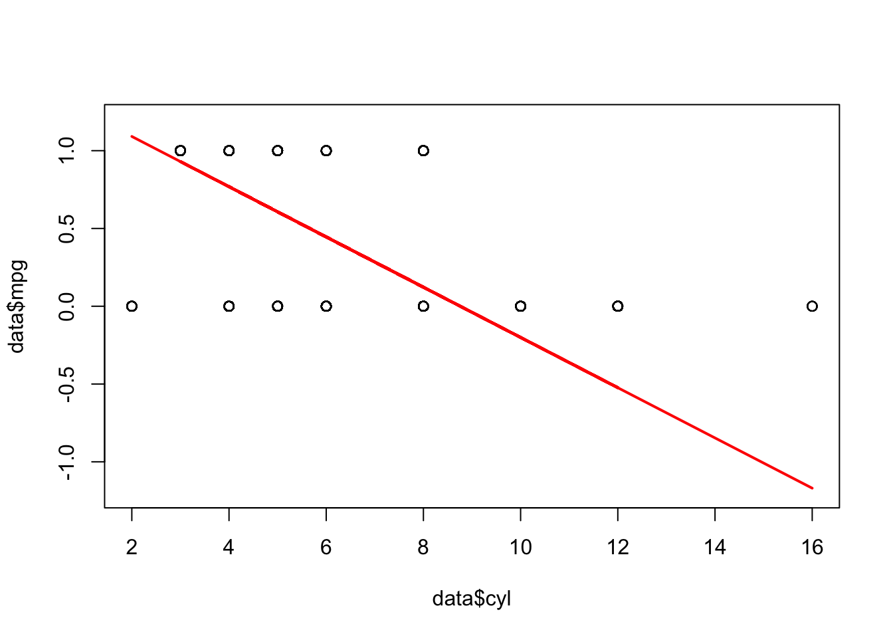
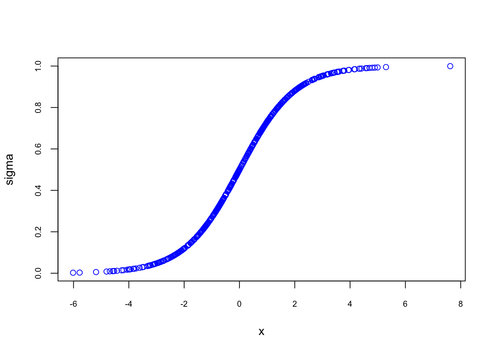
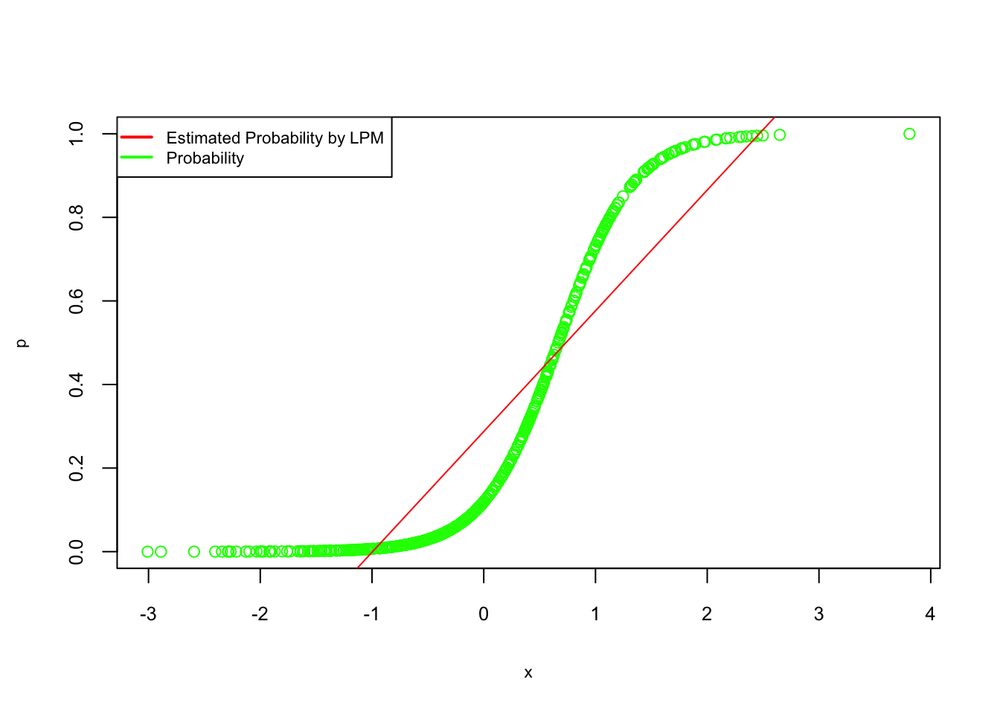
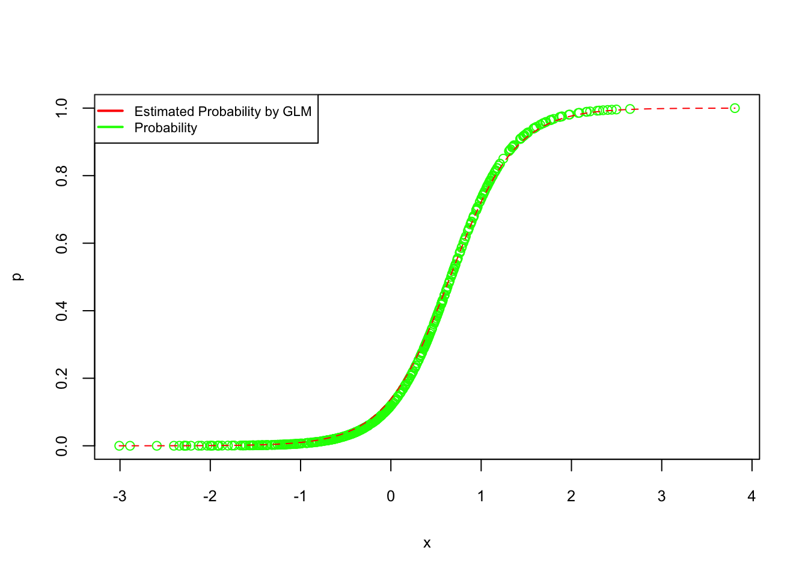

Chapter 5 Parametric Estimations
So far we have only considered models for numeric response variables. What happens if the response variable is categorical? Can we use linear models in these situations? Yes, we can. To understand how, let’s look at the ordinary least-square (OLS) regression, which is actually a specific case of the more general, generalized linear model (GLM). So, in general, GLMs relate the mean of the response to a linear combination of the predictors, \(\eta(x)\), through the use of a link function, \(g(.)\). That is,
\[\begin{equation} \eta(\mathbf{x})=g(\mathrm{E}[Y | \mathbf{X}=\mathbf{x}]), \tag{5.1} \end{equation}\]
Or,
\[\begin{equation} \eta(\mathbf{x})=\beta_{0}+\beta_{1} x_{1}+\beta_{2} x_{2}+\ldots+\beta_{p-1} x_{p-1} = g(\mathrm{E}[Y | \mathbf{X}=\mathbf{x}]) \tag{5.2} \end{equation}\]
In the case of a OLS,
\[ g(\mathrm{E}[Y | \mathbf{X}=\mathbf{x}]) = E[Y | \mathbf{X}=\mathbf{x}], \]
To illustrate the use of a GLM, we will focus on the case of binary response variable coded using 0 and 1. In practice, these 0s and 1s represent two possible outcomes such as “yes” or “no”, “sick” or “healthy”, etc.
\[ Y=\left\{\begin{array}{ll}{1} & {\text { yes }} \\ {0} & {\text { no }}\end{array}\right. \]
5.1 Linear Probability Models (LPM)
Let’s use the dataset Vehicles from the fueleconomy package. We we ill create a new variable a new variable, mpg, which is 1 if the car’s hightway mpg is more than the average, 0 otherwise:
library(fueleconomy)
data(vehicles)
df <- as.data.frame(vehicles)
# Remove NAs
dim(df)## [1] 33442 12data <- df[complete.cases(df), ]
dim(data)## [1] 33382 12# Binary outcome mpg = 1 if hwy > mean(hwy), 0 otherwise
data$mpg <- ifelse(data$hwy > mean(data$hwy), 1, 0)
table(data$mpg)##
## 0 1
## 17280 16102We are going to have a model that predicts mpg (i.e. mpg = 1) for each car depending on their attributes. If you check the data, you see that many variables are character variables. Although most functions, like lm(), accept character variables (and convert them to factor), it is a good practice to check each variable and convert them appropriate data types.
for (i in 1:ncol(data)) {
if(is.character(data[,i])) data[,i] <- as.factor(data[,i])
}
str(data)## 'data.frame': 33382 obs. of 13 variables:
## $ id : num 13309 13310 13311 14038 14039 ...
## $ make : Factor w/ 124 levels "Acura","Alfa Romeo",..: 1 1 1 1 1 1 1 1 1 1 ...
## $ model: Factor w/ 3174 levels "1-Ton Truck 2WD",..: 28 28 28 29 29 29 29 29 29 30 ...
## $ year : num 1997 1997 1997 1998 1998 ...
## $ class: Factor w/ 34 levels "Compact Cars",..: 29 29 29 29 29 29 29 29 29 1 ...
## $ trans: Factor w/ 46 levels "Auto (AV-S6)",..: 32 43 32 32 43 32 32 43 32 32 ...
## $ drive: Factor w/ 7 levels "2-Wheel Drive",..: 5 5 5 5 5 5 5 5 5 5 ...
## $ cyl : num 4 4 6 4 4 6 4 4 6 5 ...
## $ displ: num 2.2 2.2 3 2.3 2.3 3 2.3 2.3 3 2.5 ...
## $ fuel : Factor w/ 12 levels "CNG","Diesel",..: 11 11 11 11 11 11 11 11 11 7 ...
## $ hwy : num 26 28 26 27 29 26 27 29 26 23 ...
## $ cty : num 20 22 18 19 21 17 20 21 17 18 ...
## $ mpg : num 1 1 1 1 1 1 1 1 1 0 ...Done! We are ready to have a model to predict mpg. For now, we’ll use only fuel.
model1 <- lm(mpg ~ fuel + 0, data = data) #No intercept
summary(model1)##
## Call:
## lm(formula = mpg ~ fuel + 0, data = data)
##
## Residuals:
## Min 1Q Median 3Q Max
## -0.8571 -0.4832 -0.2694 0.5168 0.7306
##
## Coefficients:
## Estimate Std. Error t value Pr(>|t|)
## fuelCNG 0.362069 0.065383 5.538 3.09e-08 ***
## fuelDiesel 0.479405 0.016843 28.463 < 2e-16 ***
## fuelGasoline or E85 0.269415 0.015418 17.474 < 2e-16 ***
## fuelGasoline or natural gas 0.277778 0.117366 2.367 0.0180 *
## fuelGasoline or propane 0.000000 0.176049 0.000 1.0000
## fuelMidgrade 0.302326 0.075935 3.981 6.87e-05 ***
## fuelPremium 0.507717 0.005364 94.650 < 2e-16 ***
## fuelPremium and Electricity 1.000000 0.497942 2.008 0.0446 *
## fuelPremium Gas or Electricity 0.857143 0.188205 4.554 5.27e-06 ***
## fuelPremium or E85 0.500000 0.053081 9.420 < 2e-16 ***
## fuelRegular 0.483221 0.003311 145.943 < 2e-16 ***
## fuelRegular Gas and Electricity 1.000000 0.176049 5.680 1.36e-08 ***
## ---
## Signif. codes: 0 '***' 0.001 '**' 0.01 '*' 0.05 '.' 0.1 ' ' 1
##
## Residual standard error: 0.4979 on 33370 degrees of freedom
## Multiple R-squared: 0.4862, Adjusted R-squared: 0.486
## F-statistic: 2631 on 12 and 33370 DF, p-value: < 2.2e-16The estimated model is a probabilistic model since,
\[ E[Y | \mathbf{X}=\mathbf{Regular}]) = \text{Pr}(Y=1|\mathbf{X}=\mathbf{Regular}), \]
In this context, the link function is called “identity” because it directly “links” the probability to the linear function of the predictor variables. Let’s see if we can verify this:
tab <- table(data$fuel, data$mpg)
ftable(addmargins(tab))## 0 1 Sum
##
## CNG 37 21 58
## Diesel 455 419 874
## Gasoline or E85 762 281 1043
## Gasoline or natural gas 13 5 18
## Gasoline or propane 8 0 8
## Midgrade 30 13 43
## Premium 4242 4375 8617
## Premium and Electricity 0 1 1
## Premium Gas or Electricity 1 6 7
## Premium or E85 44 44 88
## Regular 11688 10929 22617
## Regular Gas and Electricity 0 8 8
## Sum 17280 16102 33382prop.table(tab, 1)##
## 0 1
## CNG 0.6379310 0.3620690
## Diesel 0.5205950 0.4794050
## Gasoline or E85 0.7305849 0.2694151
## Gasoline or natural gas 0.7222222 0.2777778
## Gasoline or propane 1.0000000 0.0000000
## Midgrade 0.6976744 0.3023256
## Premium 0.4922827 0.5077173
## Premium and Electricity 0.0000000 1.0000000
## Premium Gas or Electricity 0.1428571 0.8571429
## Premium or E85 0.5000000 0.5000000
## Regular 0.5167794 0.4832206
## Regular Gas and Electricity 0.0000000 1.0000000The frequency table shows the probability of each class (MPG = 1 or 0) for each fuel type. The OLS we estimated produces exactly the same results, that is,
\[ Pr[Y = 1 | x=\mathbf{Regular}]) = \beta_{0}+\beta_{1} x_{i}. \]
Since \(Y\) has only two possible outcomes (1 and 0), it has a specific probability distribution. First, let’s refresh our memories about Binomial and Bernoulli distributions. In general, if a random variable, \(X\), follows a binomial distribution with parameters \(n \in \mathbb{N}\) and \(p \in [0,1]\), we write \(X \sim B(n, p)\). The probability of getting exactly \(k\) successes in \(n\) trials is given by the probability mass function:
\[\begin{equation} \operatorname{Pr}(X=k)=\left(\begin{array}{l}{n} \\ {k}\end{array}\right) p^{k}(1-p)^{n-k} \tag{5.3} \end{equation}\] for \(k = 0, 1, 2, ..., n\), where
\[ \left(\begin{array}{l}{n} \\ {k}\end{array}\right)=\frac{n !}{k !(n-k) !} \]
Formula 5.3 can be understood as follows: \(k\) successes occur with probability \(p^k\) and \(n-k\) failures occur with probability \((1-p)^{n−k}\). However, the \(k\) successes can occur anywhere among the \(n\) trials, and there are \(n!/k!(n!-k!)\) different ways of distributing \(k\) successes in a sequence of \(n\) trials. Suppose a biased coin comes up heads with probability 0.3 when tossed. What is the probability of achieving 4 heads after 6 tosses?
\[ \operatorname{Pr}(4 \text { heads})=f(4)=\operatorname{Pr}(X=4)=\left(\begin{array}{l}{6} \\ {4}\end{array}\right) 0.3^{4}(1-0.3)^{6-4}=0.059535 \]
The Bernoulli distribution on the other hand, is a discrete probability distribution of a random variable which takes the value 1 with probability \(p\) and the value 0 with probability \(q = (1 - p)\), that is, the probability distribution of any single experiment that asks a yes–no question. The Bernoulli distribution is a special case of the binomial distribution, where \(n = 1\). Symbolically, \(X \sim B(1, p)\) has the same meaning as \(X \sim Bernoulli(p)\). Conversely, any binomial distribution, \(B(n, p)\), is the distribution of the sum of \(n\) Bernoulli trials, \(Bernoulli(p)\), each with the same probability \(p\).
\[ \operatorname{Pr}(X=k) =p^{k}(1-p)^{1-k} \quad \text { for } k \in\{0,1\} \]
Formally, the outcomes \(Y_i\) are described as being Bernoulli-distributed data, where each outcome is determined by an unobserved probability \(p_i\) that is specific to the outcome at hand, but related to the explanatory variables. This can be expressed in any of the following equivalent forms:
\[\begin{equation} \operatorname{Pr}\left(Y_{i}=y | x_{1, i}, \ldots, x_{m, i}\right)=\left\{\begin{array}{ll}{p_{i}} & {\text { if } y=1} \\ {1-p_{i}} & {\text { if } y=0}\end{array}\right. \tag{5.4} \end{equation}\]
The expression 5.4 is the probability mass function of the Bernoulli distribution, specifying the probability of seeing each of the two possible outcomes. Similarly, this can be written as follows, which avoids having to write separate cases and is more convenient for certain types of calculations. This relies on the fact that \(Y_{i}\) can take only the value 0 or 1. In each case, one of the exponents will be 1, which will make the outcome either \(p_{i}\) or 1−\(p_{i}\), as in 5.4.1
\[ \operatorname{Pr}\left(Y_{i}=y | x_{1, i}, \ldots, x_{m, i}\right)=p_{i}^{y}\left(1-p_{i}\right)^{(1-y)} \]
Hence this shows that
\[ \operatorname{Pr}\left(Y_{i}=1 | x_{1, i}, \ldots, x_{m, i}\right)=p_{i}=E[Y_{i} | \mathbf{X}=\mathbf{x}]) \]
Let’s have a more complex model:
model2 <- lm(mpg ~ fuel + drive + cyl, data = data)
summary(model2)##
## Call:
## lm(formula = mpg ~ fuel + drive + cyl, data = data)
##
## Residuals:
## Min 1Q Median 3Q Max
## -1.09668 -0.21869 0.01541 0.12750 0.97032
##
## Coefficients:
## Estimate Std. Error t value Pr(>|t|)
## (Intercept) 0.858047 0.049540 17.320 < 2e-16 ***
## fuelDiesel 0.194540 0.047511 4.095 4.24e-05 ***
## fuelGasoline or E85 0.030228 0.047277 0.639 0.52258
## fuelGasoline or natural gas 0.031187 0.094466 0.330 0.74129
## fuelGasoline or propane 0.031018 0.132069 0.235 0.81432
## fuelMidgrade 0.214471 0.070592 3.038 0.00238 **
## fuelPremium 0.189008 0.046143 4.096 4.21e-05 ***
## fuelPremium and Electricity 0.746139 0.353119 2.113 0.03461 *
## fuelPremium Gas or Electricity 0.098336 0.140113 0.702 0.48279
## fuelPremium or E85 0.307425 0.059412 5.174 2.30e-07 ***
## fuelRegular 0.006088 0.046062 0.132 0.89485
## fuelRegular Gas and Electricity 0.092330 0.132082 0.699 0.48454
## drive4-Wheel Drive 0.125323 0.020832 6.016 1.81e-09 ***
## drive4-Wheel or All-Wheel Drive -0.053057 0.016456 -3.224 0.00126 **
## driveAll-Wheel Drive 0.333921 0.018879 17.687 < 2e-16 ***
## driveFront-Wheel Drive 0.497978 0.016327 30.499 < 2e-16 ***
## drivePart-time 4-Wheel Drive -0.078447 0.039258 -1.998 0.04570 *
## driveRear-Wheel Drive 0.068346 0.016265 4.202 2.65e-05 ***
## cyl -0.112089 0.001311 -85.488 < 2e-16 ***
## ---
## Signif. codes: 0 '***' 0.001 '**' 0.01 '*' 0.05 '.' 0.1 ' ' 1
##
## Residual standard error: 0.3501 on 33363 degrees of freedom
## Multiple R-squared: 0.5094, Adjusted R-squared: 0.5091
## F-statistic: 1924 on 18 and 33363 DF, p-value: < 2.2e-16Since OLS is a “Gaussian” member of GLS family, we can also estimate it as GLS. We use glm() and define the family as “gaussian”.
model3 <- glm(mpg ~ fuel + drive + cyl, family = gaussian, data = data)
identical(round(coef(model2),2), round(coef(model3),2))## [1] TRUEWith this LPM model, we can now predict the classification of future cars in terms of high (mpg = 1) or low (mpg = 0), which was our objective. Let’s see how successful we are in identifying cars with mpg = 1 in our own sample.
#How many cars we have with mpg = 1 and mpg = 0 in our data
table(data$mpg) ##
## 0 1
## 17280 16102#In-sample fitted values or predicted probabilities for mpg = 1
#Remember our E(Y|X) is Pr(Y=1|X)
mpg_hat <- fitted(model2)
#If any predicted mpg above 0.5 should be considered as 1
length(mpg_hat[mpg_hat > 0.5]) ## [1] 14079length(mpg_hat[mpg_hat <= 0.5])## [1] 19303Our prediction is significantly off: we predict many cars with mpg = 0 as having mpg = 1.
Note that we are using 0.5 as our discriminating threshold to convert predicted probabilities to predicted “labels”. This is an arbitrary choice as we will see later
Another issue with LPM can be see below:
summary(mpg_hat)## Min. 1st Qu. Median Mean 3rd Qu. Max.
## -0.7994 0.2187 0.4429 0.4824 0.9138 1.2088The predicted probabilities (of mpg = 1) are not bounded between 1 and 0. We will talk about these issues later. None of these problems are major drawbacks for LPM. But, by its nature, LPM defines a constant marginal effect of \(x\) on \(Pr[Y = 1 | x)\).
\[ Pr(Y = 1 | x=\mathbf{Regular}) = \beta_{0}+\beta_{1} x_{i}. \]
We can see it with a different example
model_n <- lm(mpg ~ cyl, data = data)
plot(data$cyl, data$mpg, ylim = c(-1.2, 1.2))
lines(data$cyl, model_n$fitted.values, col = "red", lwd = 2)
Two things we see in the plot: first predicted probabilities are not bounded between 0 and 1. Second, the effect of cyc on \(Pr(Y = 1 | x)\) is constant regardless of the value of cyc.
We can of course add polynomial terms to LPM to deal with it. But, we may have a better model, Logistic regression, if we think that the constant marginal effect is an unrealistic assumption.
5.2 Logistic Regression
First, let’s define some notation that we will use throughout. Note that many machine learning texts use \(p\) as the number of parameters. Here we use it to denote probability.
\[ p(\mathbf{x})=P(Y=1 | \mathbf{X}=\mathbf{x}) \]
With a binary (Bernoulli) response, we will mostly focus on the case when \(Y = 1\), since, with only two possibilities, it is trivial to obtain probabilities when \(Y = 0\).
\[ \begin{array}{c}{P(Y=0 | \mathbf{X}=\mathbf{x})+P(Y=1 | \mathbf{X}=\mathbf{x})=1} \\\\ {P(Y=0 | \mathbf{X}=\mathbf{x})=1-p(\mathbf{x})}\end{array} \]
We begin with introducing the standard logistic function, which is a sigmoid function. It takes any real input \(z\) and outputs a value between zero and one. The standard logistic function is defined as follows:
\[\begin{equation} \sigma(z)=\frac{e^{z}}{e^{z}+1}=\frac{1}{1+e^{-z}} \tag{5.5} \end{equation}\]
Here is an example:
set.seed(1)
n <- 500
x = rnorm(n, 0,2)
sigma <- 1/(1+exp(-x))
plot(sigma ~ x, col ="blue", cex.axis = 0.7)
This logistic function is nice because: (1) whatever the \(x\)’s are \(\sigma(z)\) is always between 0 and 1, (2) The effect of \(x\) on \(\sigma(z)\) is not linear. That is, there is lower and upper thresholds in \(x\) that before and after those values (around -2 and 2 here) the marginal effect of \(x\) on \(\sigma(z)\) is very low. Therefore, it seems that if we use a logistic function and replace \(\sigma(z)\) with \(p(x)\), we can solve issues related to these two major drawbacks of LPM.
Let us assume that \(z = y = \beta_{0}+\beta_{1} x_{1}\). Then, the logistic function can now be written as:
\[\begin{equation} p(x)=P(Y=1|\mathbf{X}=\mathbf{x})=\frac{1}{1+e^{-\left(\beta_{0}+\beta_{1} x\right)}} \tag{5.6} \end{equation}\]
To understand why nonlinearity would be a desirable future in some probability predictions, let’s imagine we try to predict the effect of saving (\(x\)) on homeownership (\(p(x)\)). If you have no saving now (\(x=0\)), additional $10K saving would not make a significant difference in your decision to buy a house (\(P(Y=1|x)\)). Similarly, when you have $500K (\(x\)) saving, additional $10K (\(dx\)) saving should not make a big difference in your decision to buy a house. That’s why flat lower and upper tails of \(\sigma(z)\) are nice futures reflecting very low marginal effects of \(x\) on the probability of having a house in this case.
After a simple algebra, we can also write the same function as follows,
\[\begin{equation} \ln \left(\frac{p(x)}{1-p(x)}\right)=\beta_{0}+\beta_{1} x, \tag{5.7} \end{equation}\]
where \(p(x)/(1-p(x))\) is called odds, a ratio of success over failure. The natural log of this ratio is called, log odds, or Logit, usually denoted as \(\mathbf(L)\).
p_x <- sigma
Logit <- log(p_x/(1-p_x)) #By defult log() calculates natural logarithms
plot(Logit ~ x, col ="red", cex.axis = 0.7)
In many cases, researchers use a logistic function, when the outcome variable in a regression is dichotomous. Although there are situations where the linear model is clearly problematic (as described above), there are many common situations where the linear model is just fine, and even has advantages.
Let’s start by comparing the two models explicitly. If the outcome \(Y\) is dichotomous with values 1 and 0, we define \(P(Y=1|X) = E(Y|X)\) as proved earlier, which is just the probability that \(Y\) is 1, given some value of the regressors \(X\). Then the linear and logistic probability models are:
\[ P(Y = 1|\mathbf{X}=\mathbf{x})=E(Y | \mathbf{X}=\mathbf{x}) = \beta_{0}+\beta_{1} x_{1}+\beta_{2} x_{2}+\ldots+\beta_{k} x_{k}, \] \(~\)
\[ \ln \left(\frac{P(Y=1|\mathbf{X})}{1-P(Y=1|\mathbf{X})}\right)=\beta_{0}+\beta_{1} x_{1}+\ldots+\beta_{k} x_{k} \]
\(~\)
While LPM assumes that the probability \(P\) is a linear function of the regressors, the logistic model assumes that the natural log of the odds \(P/(1-P)\) is a linear function of the regressors. Note that applying the inverse logit transformation allows us to obtain an expression for \(P(x)\). Finally, LPM can be estimated easily with OLS, the Logistic model needs MLE.
\[ p(\mathbf{x})=E(Y | \mathbf{X}=\mathbf{x})=P(Y=1 | \mathbf{X}=\mathbf{x})=\frac{1}{1+e^{-(\beta_{0}+\beta_{1} x_{1}+\cdots+\beta_{k} x_{k})}} \] \(~\)
The major advantage of LPM is its interpretability. In the linear model, if \(\beta_{2}\) is (say) 0.05, that means that a one-unit increase in \(x_{2}\) is associated with a 5-percentage point increase in the probability that \(Y\) is 1. Just about everyone has some understanding of what it would mean to increase by 5 percentage points their probability of, say, voting, or dying, or becoming obese. In the logistic model, however, a change in \(x_{1}\) changes the log odds, \(\text{log}(P/{(1-P)})\). Hence, the coefficient of a logistic regression requires additional steps to understand what it means: we convert it to the odd ratio (OR) or use the above equation to calculate fitted (predicted) probabilities.
When we should use the logistic model? It should be the choice if it fits the data much better than the linear model. In other words, for a logistic model to fit better than a linear model, it must be the case that the log odds are a linear function of X, but the probability is not.
Lets review these concepts in a simulation exercise:
#Creating random data
set.seed(1)
n <- 500
x = rnorm(n)
z = -2 + 3 * x
#Probablity is defined by a logistic function
#Therefore it is not a linear function of x!
p = 1 / (1 + exp(-z))
#Remember Bernoulli distribution defines Y as 1 or 0
y = rbinom(n, size = 1, prob = p)
#And we create our data
data <- data.frame(y, x)
head(data)## y x
## 1 0 -0.6264538
## 2 0 0.1836433
## 3 0 -0.8356286
## 4 0 1.5952808
## 5 0 0.3295078
## 6 0 -0.8204684table(y)## y
## 0 1
## 353 147We know that probability is defined by a logistic function (see above). What happens if we fit it as LPM, which is \(Pr(Y = 1 | x=\mathbf{x}) = \beta_{0}+\beta_{1} x_{i}\)?
lpm <- lm(y ~ x, data = data)
summary(lpm)##
## Call:
## lm(formula = y ~ x, data = data)
##
## Residuals:
## Min 1Q Median 3Q Max
## -0.76537 -0.25866 -0.08228 0.28686 0.82338
##
## Coefficients:
## Estimate Std. Error t value Pr(>|t|)
## (Intercept) 0.28746 0.01567 18.34 <2e-16 ***
## x 0.28892 0.01550 18.64 <2e-16 ***
## ---
## Signif. codes: 0 '***' 0.001 '**' 0.01 '*' 0.05 '.' 0.1 ' ' 1
##
## Residual standard error: 0.3504 on 498 degrees of freedom
## Multiple R-squared: 0.411, Adjusted R-squared: 0.4098
## F-statistic: 347.5 on 1 and 498 DF, p-value: < 2.2e-16plot(x, p, col = "green",
cex.lab = 0.7,
cex.axis = 0.8)
abline(lpm, col = "red")
legend("topleft", c("Estimated Probability by LPM", "Probability"),
lty = c(1, 1),
pch = c(NA, NA),
lwd = 2,
col = c("red", "green"),
cex = 0.7)
How about a logistic regression?
logis <- glm(y ~ x, data = data, family = binomial)
summary(logis)##
## Call:
## glm(formula = y ~ x, family = binomial, data = data)
##
## Deviance Residuals:
## Min 1Q Median 3Q Max
## -2.3813 -0.4785 -0.2096 0.2988 2.4274
##
## Coefficients:
## Estimate Std. Error z value Pr(>|z|)
## (Intercept) -1.8253 0.1867 -9.776 <2e-16 ***
## x 2.7809 0.2615 10.635 <2e-16 ***
## ---
## Signif. codes: 0 '***' 0.001 '**' 0.01 '*' 0.05 '.' 0.1 ' ' 1
##
## (Dispersion parameter for binomial family taken to be 1)
##
## Null deviance: 605.69 on 499 degrees of freedom
## Residual deviance: 328.13 on 498 degrees of freedom
## AIC: 332.13
##
## Number of Fisher Scoring iterations: 6plot(x, p, col = "green", cex.lab = 0.8, cex.axis = 0.8)
curve(predict(logis, data.frame(x), type = "response"),
add = TRUE,
col = "red",
lty = 2)
legend("topleft", c("Estimated Probability by GLM", "Probability"),
lty = c(1, 1),
pch = c(NA, NA),
lwd = 2,
col = c("red", "green"),
cex = 0.7)
As you can see, the estimated logistic regression coefficients are in line with our DGM coefficients (-2, 3).
\[ \log \left(\frac{\hat{p}(\mathbf{x})}{1-\hat{p}(\mathbf{x})}\right)=-1.8253+2.7809 x \]
5.2.1 Estimating Logistic Regression
Since Logit is a linear function:
\[\begin{equation} Logit_i = \log \left(\frac{p\left(\mathbf{x}_{\mathbf{i}}\right)}{\left.1-p\left(\mathbf{x}_{\mathbf{i}}\right)\right)}\right)=\beta_{0}+\beta_{1} x_{i 1}+\cdots+\beta_{p-1} x_{i(p-1)}, \tag{5.8} \end{equation}\]
it seems that we can estimate it by a regular OLS. But, we only observe \(Y=1\) or \(Y=0\) not \(p(\mathbf{x})\). To estimate the \(\beta\) parameters, we apply the maximimum likelihood estimation method. First, we write the likelihood function, \(L(\beta)\), given the observed data, which is technically a joint probability density function that can be written a product of \(n\) individual density functions:
\[ L(\boldsymbol{\beta})=\prod_{i=1}^{n} P\left(Y_{i}=y_{i} | \mathbf{X}_{\mathbf{i}}=\mathbf{x}_{\mathbf{i}}\right) \] With some rearrangement, we make it more explicit:
\[ \begin{aligned} L(\boldsymbol{\beta}) &=\prod_{i=1}^{n} p\left(\mathbf{x}_{\mathbf{i}}\right)^{y_{i}}\left(1-p\left(\mathbf{x}_{\mathbf{i}}\right)\right)^{\left(1-y_{i}\right)} \end{aligned} \] With a logarithmic transformation of this function, it becomes a log-likelihood function, which turns products into sums. Hence, it becomes a linear function:
\[\begin{equation} \begin{split} \begin{aligned} \ell\left(\beta_{0}, \beta\right) &=\sum_{i=1}^{n} y_{i} \log p\left(x_{i}\right)+\left(1-y_{i}\right) \log (1-p\left(x_{i}\right)) \\ &=\sum_{i=1}^{n} \log (1-p\left(x_{i}\right))+\sum_{i=1}^{n} y_{i} \log \frac{p\left(x_{i}\right)}{1-p\left(x_{i}\right)} \\ &=\sum_{i=1}^{n} \log (1-p\left(x_{i}\right))+\sum_{i=1}^{n} y_{i}\left(\beta_{0}+\beta x_{i} \right) \\ &=\sum_{i=1}^{n} \log 1/(1+e^{z_i})+\sum_{i=1}^{n} y_{i}\left(z_i\right) \\ &=\sum_{i=1}^{n} -\log (1+e^{z_i})+\sum_{i=1}^{n} y_{i}\left(z_i\right), \end{aligned} \end{split} \tag{5.9} \end{equation}\]
where \(z_i = \beta_{0}+\beta_{1} x_{1i}+\cdots\).
Having a function for log-likelihood, we simply need to chose the values of \(\beta\) that maximize it. Typically, to find them, we would differentiate the log-likelihood with respect to the parameters (\(\beta\)), set the derivatives equal to zero, and solve.
\[ \begin{aligned} \frac{\partial \ell}{\partial \beta_{j}} &=-\sum_{i=1}^{n} \frac{1}{1+e^{\beta_{0}+x_{i} \beta}} e^{\beta_{0}+x_{i} \beta} x_{i j}+\sum_{i=1}^{n} y_{i} x_{i j} \\ &=\sum_{i=1}^{n}\left(y_{i}-p\left(x_{i} ; \beta_{0}, \beta\right)\right) x_{i j} \end{aligned} \] Unfortunately, there is no closed form for the maximum. However, we can find the best values of \(\beta\) by using algorithm (numeric) optimization methods (See Appendix).
5.2.2 Cost functions
The cost functions represent optimization objectives in estimations and predictions. In linear regression, it’s a simple sum of squared errors, i.e.
\[\begin{equation} \mathbf{SSE}= \sum{(\hat{y}_i-y_i)^2} \tag{5.10} \end{equation}\]
If we use a similar cost function in Logistic Regression we would have a non-convex function with many local minimum points so that it would be hard to locate the global minimum. In logistic regression, as we have just seen, the log-likelihood function becomes the cost function. In the machine learning literature notation changes slightly:
\[\begin{equation} J &=\sum_{i=1}^{n} y_{i} \log p\left(x_{i}\right)+\left(1-y_{i}\right) \log (1-p\left(x_{i}\right)), \tag{5.11} \end{equation}\]
where for each observation,
\[ p\left(\mathbf{x}_{\mathbf{i}}\right)=\frac{e^{\beta_{0}+\beta x_{i}}}{1+e^{\beta_{0}+\beta x_{i}}} \]
Because it is more common to maximize a function in practice, the log likelihood function is inverted by adding a negative sign to the front. For classification problems, equation 5.11 is also called as “log loss“, “cross-entropy” and “negative log-likelihood” used interchangeably.
Now that we have a cost function, we simply need to chose the values of \(\beta\) that minimize it. Due to difficulties in multi-dimensional analytic solutions, we use gradient descent and some other types of algorithmic optimization methods.
The same cost function can be written when \(y_i \in \{+1,-1\}\)
\[ g_i(\mathbf{w})= \begin{cases}-\log \left(p\left({\mathbf{x}_i}^{T} \mathbf{w}\right)\right) & \text { if } y_{i}=+1 \\ -\log \left(1-p\left({\mathbf{x}_i}^{T} \mathbf{w}\right)\right) & \text { if } y_{i}=-1\end{cases} \]
We can then form the Softmax cost for Logistic regression by taking an average of these Log Error costs as
\[ g(\mathbf{w})=\frac{1}{n} \sum_{i=1}^{n} g_{i}(\mathbf{w}) . \]
It is common to express the Softmax cost differently by re-writing the Log Error in a equivalent way as follows. Notice that with \(z = \mathbf{x}^{T} \mathbf{w}\)
\[ 1-p(z)=1-\frac{1}{1+e^{-z}}=\frac{1+e^{-z}}{1+e^{-z}}-\frac{1}{1+e^{-z}}=\frac{e^{-z}}{1+e^{-z}}=\frac{1}{1+e^{z}}=p(-z) \]
Hence, the point-wise cost function can be written as
\[ g_{i}(\mathbf{w})= \begin{cases}-\log \left(p\left({\mathbf{x}}_{i}^{T} \mathbf{w}\right)\right) & \text { if } y_{i}=+1 \\ -\log \left(p\left(-{\mathbf{x}}_{i}^{T} \mathbf{w}\right)\right) & \text { if } y_{i}=-1\end{cases} \]
Now notice that because we are using the label values \(\pm 1\) we can move the label value in each case inside the inner most parenthesis,
\[ g_{i}(\mathbf{w})=-\log \left(p\left(y_{i} {\mathbf{x}}_{i}^{T} \mathbf{w}\right)\right) \] Finally since \(-\log (x)=\frac{1}{x}\), we can re-write the point-wise cost above equivalently as
\[ g_{i}(\mathbf{w})=\log \left(1+e^{-y_{i} \mathbf{x}_{i}^{T} \mathbf{w}}\right) \]
The average of this point-wise cost over all \(n\) points we have the common Softmax cost for logistic regression:
\[ g(\mathbf{w})=\frac{1}{n} \sum_{i=1}^{n} g_{i}(\mathbf{w})=\frac{1}{n} \sum_{i=1}^{n} \log \left(1+e^{-y_{i} \mathbf{x}_{i}^{T} \mathbf{w}}\right) \]
This will be helpful when we make the comparisons between logistic regression and support vector machines in Chapter 15.
5.2.3 Deviance
You have probably noticed that the output from summary() reports the “deviance” measures for logistic regressions. The “Null deviance” is the deviance for the null model, that is, a model with no predictors. The null deviance shows how well the response variable is predicted by a model that includes only the intercept (grand mean). What is deviance?
It is defined as the difference of likelihoods between the fitted model and the saturated model:
\[\begin{equation} D=-2 \ell(\hat{\beta})+2 \ell(\text { saturated model }) \tag{5.12} \end{equation}\]
This is also known as the Likelihood Ratio Test (LRT) that has been used to compare two nested models.
\[\begin{equation} \mathbf{L R T}=-2 \log\left(\frac{L_{s}(\hat{\theta})}{L_{g}(\hat{\theta})}\right) \tag{5.13} \end{equation}\]
where \(L_s\) in 5.13 is the likelihood for the null model and \(L_g\) is the likelihood for the alternative model.
The perfect model, known as the saturated model, denotes an abstract model that fits perfectly the sample, that is, the model such that \(P(Y=1 | \mathbf{X}=\mathbf{x})=Y_{i}\). As the likelihood of the saturated model is exactly one, the deviance can be expressed as
\[ D=-2 \ell(\hat{\beta}) \] Therefore, the deviance is always larger than or equal to zero, which means a perfect fit. We can evaluate the magnitude of the deviance relative to the null deviance,
\[ D_{0}=-2 \ell\left(\hat{\beta}_{0}\right), \]
reflecting the deviance of the worst model, which has no predictors. Hence, this comparison shows how much our fitted model has improved relative to the benchmark. We can develop a metric, the (Pseudo) \(R^{2}\) statistic:
\[\begin{equation} R^{2}=1-\frac{D}{D_{0}} \tag{5.14} \end{equation}\]
Similar to \(R^{2}\), the (Pseudo) \(R^{2}\) is a quantity between 0 and 1. If the fit is perfect, then \(D = 0\) and \(R^{2}=1\).
5.2.4 Predictive accuracy
Another way of evaluating the model’s fit is to look at its predictive accuracy. When we are interested simply in prediction in classification, but not in predicting the value of \(\hat{p(x)}\), such as
\[ \hat{Y}=\left\{\begin{array}{ll}{1,} & {\hat{p}\left(x_{1}, \ldots, x_{k}\right)>\frac{1}{2}} \\ {0,} & {\hat{p}\left(x_{1}, \ldots, x_{k}\right)<\frac{1}{2}}\end{array}\right. \] then, the overall predictive accuracy can be summarized with a matrix,
\[ \begin{array}{ccc}{\text { Predicted vs. Reality}} & {{Y}=1} & {{Y}=0} \\ {\hat{Y}=1} & {\text { TP }_{}} & {\text { FP }_{}} \\ {\hat{Y}=0} & {\text { FN }_{}} & {\text { TN }_{}}\end{array} \]
where, TP, FP, FN, TN are “True positives”, “False Positives”, “False Negatives”, “True Negatives”, respectively. This table is also know as Confusion Table. There are many metrics that can be calculated from this table to measure the accuracy of our classifier. We will spend more time on this this subject under Chapter 10 later.
Intuitively, when \(n=1\), achieving head once (\(k=1\)) is \(P(head)= p^{k}(1-p)^{1-k}=p\) or \(P(tail)= p^{k}(1-p)^{1-k}=1-p.\)↩︎